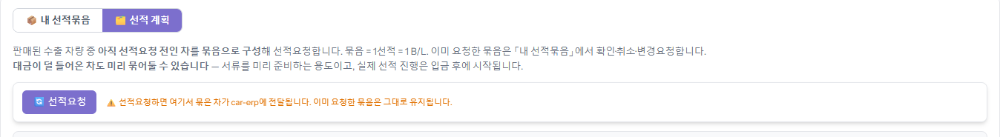
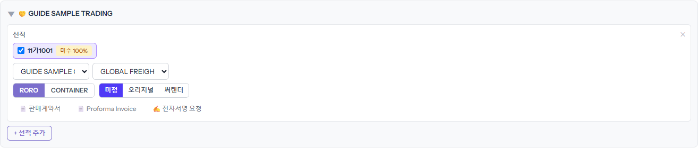
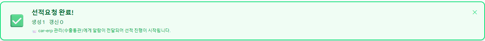
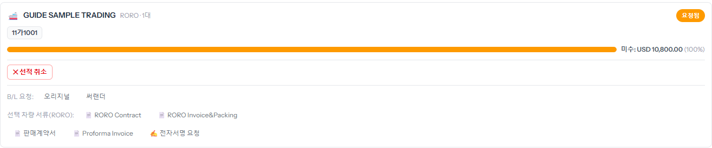
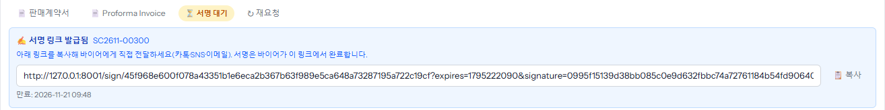

판 차를 배에 실어 달라고 ERP 수출통관 담당에게 요청하는 기능입니다. 「내 정산·미수(포털)」 → [선적요청] 탭에서 합니다.
[선적 계획]에서 바이어별로 차를 묶어 [선적요청]을 누르면, 그 묶음이 [내 선적묶음]으로 옮겨 가고 거기서 서류·전자서명·B/L 을 진행합니다. 묶음 하나 = 배 한 번 = B/L 한 장입니다.
① 선적 계획 — 묶기
1단계
[선적요청] 탭 → [선적 계획]을 엽니다
팔렸지만 아직 선적요청 전인 차가 바이어별로 접혀 있습니다. 돈이 덜 들어온 차도 미리 묶어 둘 수 있습니다 — 서류를 먼저 준비하는 용도이고, 실제 선적은 입금 뒤에 시작됩니다.

2단계
바이어를 펼쳐 차를 체크하고 칸을 채웁니다
- 차 체크 — 이번 배에 실을 차. 옆 「미수 N%」는 아직 덜 들어온 비율입니다.
- 컨사이니 — 바이어에 등록된 받는 사람 가운데 고릅니다.
- 포워딩사 — ERP 명부에서 고릅니다.
- RORO / CONTAINER — 선적 방식. CONTAINER 를 고르면 컨테이너 운임비(USD) 칸이 나옵니다(ERP 가 차 수로 나눠 넣습니다).
- B/L — 미정·오리지널·써랜더. 모르면 「미정」으로 두고 나중에 정합니다.
같은 바이어 차를 배 두 번에 나눠 보내려면 [+ 선적 추가]로 묶음을 하나 더 만듭니다.

3단계
위쪽 [선적요청]을 누릅니다
「선적요청 완료! 생성 N 갱신 N」이 뜨고 ERP 수출통관 담당에게 알림이 갑니다. 이미 요청한 묶음은 그대로 유지됩니다.

② 내 선적묶음 — 진행하기
4단계
[내 선적묶음]에서 서류를 받습니다
요청한 묶음이 「요청됨」으로 나옵니다. 막대는 이 묶음의 미수입니다. 아래 버튼으로 서류를 바로 내려받습니다.
- 「RORO Contract」「RORO Invoice&Packing」 — 선적 서류(컨테이너면 컨테이너 서류).
- 「판매계약서」「Proforma Invoice」 — 바이어에게 보내는 서류.

5단계
[전자서명 요청]으로 바이어 서명 링크를 받습니다
확인 창 뒤에 「서명 링크 발급됨」과 링크가 나옵니다. [복사]해서 카톡·SNS·메일로 바이어에게 보내면, 바이어가 링크에서 판매계약서에 서명합니다. 버튼 자리에는 「서명 대기」가 붙고, 서명이 끝나면 바뀝니다. 링크에는 만료일이 있습니다(만료 전에 서명해야 합니다).

6단계
B/L 종류가 정해지면 [오리지널] 또는 [써랜더]
「B/L 요청:」 옆 버튼을 누르면 확인 창 뒤 관리에게 알림이 갑니다. 관리가 발급하기 전에는 「B/L요청 무름」으로 되돌릴 수 있습니다.
알아 둘 것
- 관리가 아직 손대지 않은 묶음은 [선적 취소]로 바로 취소됩니다. 관리가 착수한 묶음은 자동으로 못 바꾸니 「변경·취소 요청」에 사유를 적어 보냅니다.
- 계획 화면 위에 「바이어 정보가 응답에 없어 선적요청을 막았습니다」가 뜨면, ERP 에 바이어가 비어 있는 옛 묶음이 있는 것입니다. 묶음을 지키려고 board 가 멈춘 것이니 ERP 담당에게 알리세요.
- 「환율 미입력」이 뜨는 차는 완납인지 판단할 수 없다는 뜻입니다(완납이라는 뜻이 아님). B/L 발급 전에 ERP 에서 환율을 넣어야 합니다.